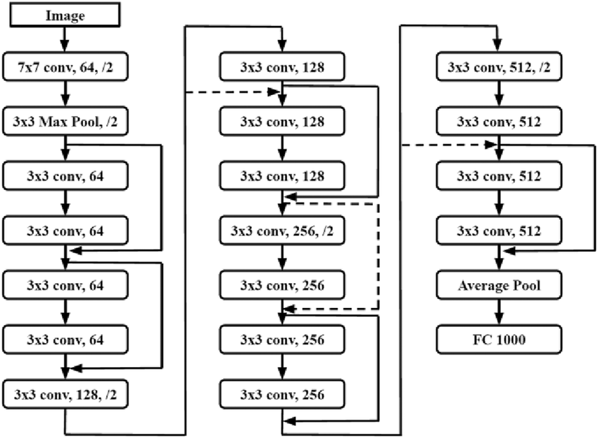

We employ a modified ResNet-18 model specifically adapted for the CIFAR-100 dataset (32×32 images). ResNet is known for its residual connections that allow deeper networks to train effectively without vanishing gradients.
The training code implements a custom ResNet-18 model with the following structure:
BasicBlock for each residual blockAvgPool2D + Linear(512, 100)This design is efficient for low-resolution images like those in CIFAR datasets while maintaining depth for effective learning.
class ResNet(nn.Module):
def __init__(self):
super().__init__()
...
self.layer4 = self._make_layer(block, 512, 2, stride=2)
self.linear = nn.Linear(512, 100)
def forward(self, x):
x = self.conv1(x)
x = self.layer1(x)
x = self.layer2(x)
x = self.layer3(x)
x = self.layer4(x)
x = F.avg_pool2d(x, 4)
return self.linear(x.view(x.size(0), -1))The code defines the essential pipeline from convolutional feature extraction to class score prediction.
Advanced augmentations like RandAugment, Cutout, and Mixup are integrated for regularization and generalization boost.
Mixup is a regularization strategy that linearly blends two input images and their labels, helping the model generalize better by smoothing decision boundaries.
x_mix = λ * x1 + (1 - λ) * x2
y_mix = λ * y1 + (1 - λ) * y2Mixup forces the network to perform better interpolation and prevents it from memorizing hard examples.
We visualize normalized histograms of weights and biases across epochs to analyze trends like underfitting, generalization, and overfitting. Layers evolve at different speeds — shallow layers stabilize quickly, while deeper ones continue adjusting longer.
Video 1 – Bias Evolution
Video 2 – Weight Evolution